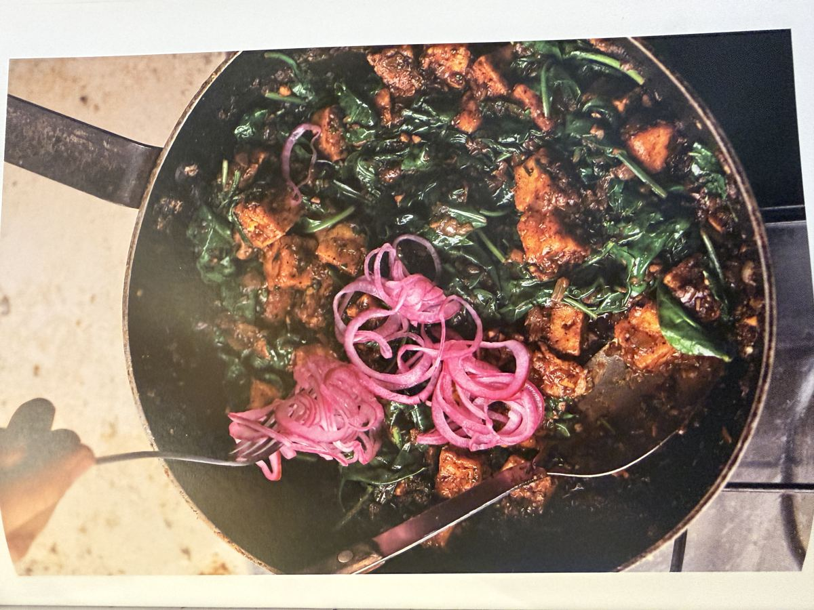

Hauptgericht
Noors Tofu mit schwarzer Limette
Ein Rezept aus dem Ottolenghi-Kochbuch "Flavour": knuspriger Tofu in einer würzigen Sauce aus Zwiebeln, Knoblauch, Kreuzkümmel und getrockneter schwarzer Limette, mit Babyspinat und marinierten roten Zwiebeln. Pflanzliches Protein, viel grünes Gemüse und ohne Frittierfett in der Sauce selbst – daher Grün.

Marinierte Zwiebeln
- 1 kleine rote Zwiebel, in feine Ringe gehobelt (60 g)
- 1 EL Apfelessig
- 2 TL Zucker (davon 1 TL für die Marinade)
- Salz
Tofu
- 600 ml Sonnenblumenöl, zum Frittieren
- 2 Blöcke fester Tofu (à 280 g), trocken getupft und in 2 cm große Würfel geschnitten
- 2 EL Speisestärke
Sauce
- 2 Zwiebeln, grob gewürfelt (300 g)
- 6 Knoblauchzehen, grob gehackt
- 60 ml Olivenöl
- 2 TL Kreuzkümmelsamen, im Mörser grob zerstoßen
- 2–3 getrocknete schwarze Limetten, zerkleinert, bis 2 EL Püree entstanden sind (10 g); ersatzweise 1 EL Saft und 1 EL abgeriebene Schale von Bio-Limetten
- 2 EL Tomatenmark
- 20 g Petersilie, grob gehackt
- 250 g Babyspinat
- Salz und schwarzer Pfeffer
Zubereitung
- Die Zwiebelringe mit dem Essig, 1 TL Zucker und ½ TL Salz in einer kleinen Schüssel gut mischen. Beiseitestellen und marinieren, während das Gericht zubereitet wird.
- Das Sonnenblumenöl in einer mittelgroßen Pfanne mit hohem Rand bei mittlerer bis hoher Temperatur erhitzen. Die Tofuwürfel in einer Schüssel mit der Speisestärke durchschwenken, bis sie ganz davon umhüllt sind. In zwei Portionen etwa 6 Minuten braten, bis sie knusprig und leicht gebräunt sind. Auf einen mit Küchenpapier bedeckten Teller legen und beiseitestellen.
- Während der Tofu brät, die Sauce zubereiten: Zwiebelwürfel und Knoblauch im Mixer in kurzen Intervallen zerkleinern, bis beides fein gehackt, aber nicht püriert ist. Das Olivenöl in einer großen Pfanne bei mittlerer bis hoher Temperatur erhitzen und die Zwiebelmischung darin etwa 10 Minuten anbraten, bis sie weich und leicht gebräunt ist.
- Kreuzkümmel, schwarze Limette (oder Limettenschale und -saft) und Tomatenmark hinzufügen und 1 Minute mitschwitzen. 400 ml Wasser, den restlichen Zucker (1 TL), ¼ TL Salz und reichlich Pfeffer dazugeben. Zum Köcheln bringen und 6 Minuten köcheln lassen, bis die Sauce eingedickt ist, dabei gelegentlich umrühren.
- Den knusprigen Tofu mit der Petersilie und etwas mehr Pfeffer in die Sauce geben und verrühren, bis er überzogen ist. Nach und nach den Spinat einrühren, bis er gerade zusammengefallen ist – das dauert etwa 3 Minuten.
- Auf einer Platte anrichten und mit den marinierten Zwiebeln toppen (oder direkt in der Pfanne servieren). Dazu passen gedämpfter Reis oder warmes Fladenbrot.
Rezept-Idee aus dem Ottolenghi-Kochbuch "Flavour".